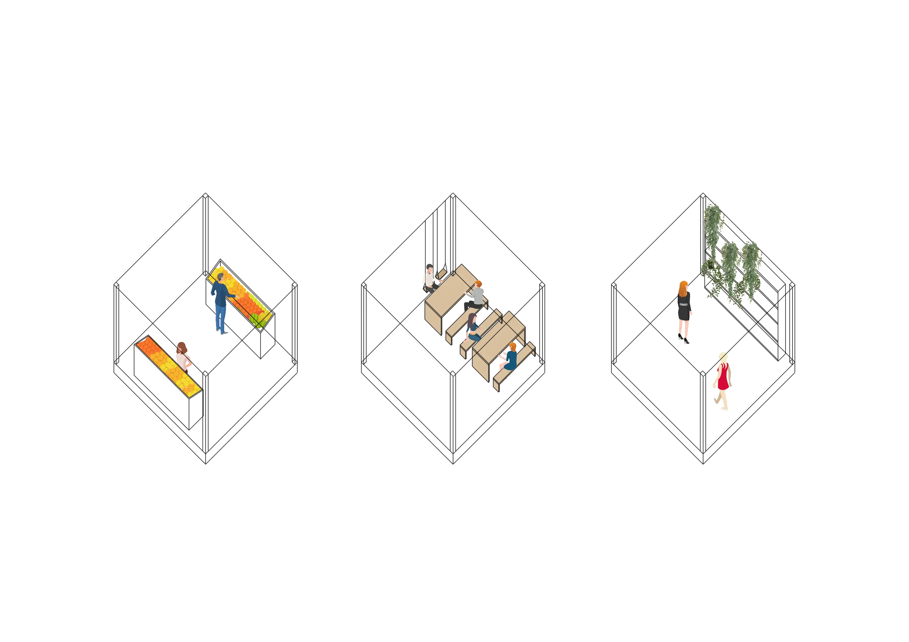

SECOND YEAR ARCHITECTURE PROJECT
A SCHOOL OF COOKING, A FOOD HALL AND A MARKET WITH A PROVISION FOR GROWING FOOD


A SCHOOL OF COOKING, A FOOD HALL AND A MARKET WITH A PROVISION FOR GROWING FOOD
Urban Park Eatery is a healthy, natural space aimed to encourage spending one’s lunch break actively. Located in the busy area of Deansgate, Manchester it provides with a food hall and an organic food market for the local office workers. Accessible urban farms within the building encourage growing food locally and provide with a green and natural space to take a little stroll during the workday.